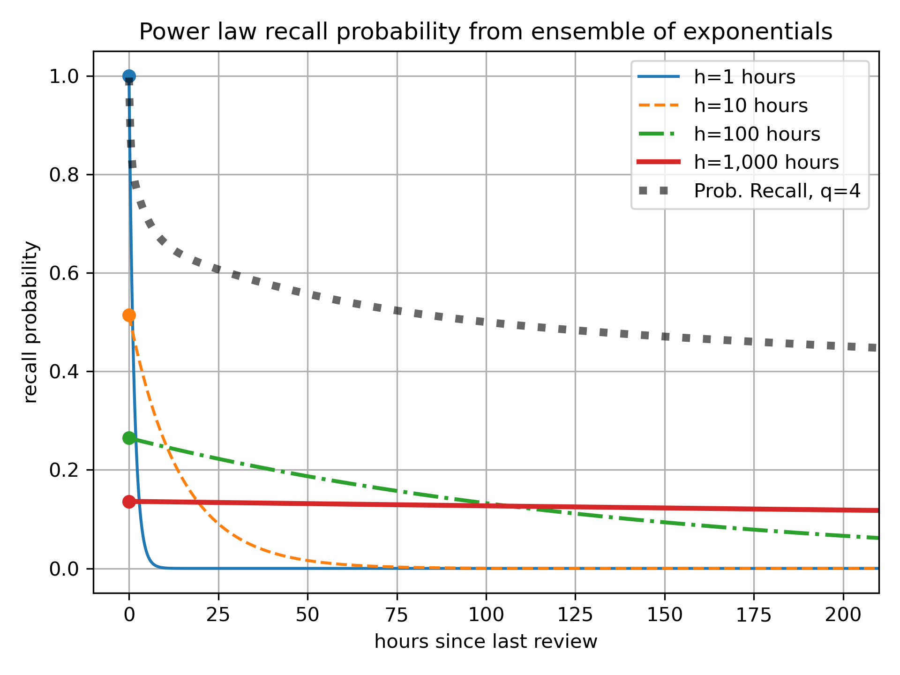

Consider a student memorizing a set of facts.
Ebisu is an open-source public-domain library that answers these two questions. It is intended to be used by software developers writing quiz apps, and provides a simple API to deal with these two aspects of scheduling quizzes, centered on two functions:
predictRecall gives the current recall probability for a given fact.updateRecall adjusts the belief about future recall probability given a quiz result.Behind this simple API, Ebisu is using a simple yet powerful model of forgetting, a model that is founded on Bayesian statistics and sum-of-exponentials (power law) forgetting. Thanks to these probabilistic foundations, Ebisu is able to handle quite a rich variety of quiz types:
So with Ebisu, quiz applications can move away from “daily review piles” caused by less flexible scheduling algorithms. For instance, a student might have only five minutes to study today, so an app using Ebisu can ensure that only the facts most in danger of being forgotten are reviewed. And since every flashcard always has a recall probability at any given time, Ebisu also enables apps to provide an infinite stream of quizzes for students who are cramming. Thus, Ebisu intelligently handles over-reviewing as well as under-reviewing.
Ebisu also has been able to support creative quiz apps that move beyond simple pass/fail flashcards.
So. This document contains both a detailed mathematical description of the underlying algorithm as well as the software API it exports. Separate implementations in other languages are detailed below.
The next sections are installation and an API Quickstart. See these if you know you want to use Ebisu in your app.
Then in the How It Works section, I contrast Ebisu to other scheduling algorithms and describe, non-technically, why you should use it.
Then there’s a long Math section that details Ebisu’s algorithm mathematically. If you like nonlinear-transformed Beta-distributed random variables, maximum a posteriori estimation, and incomplete Beta functions, this is for you.
Nerdy details in a nutshell: Ebisu largely follows Mozer et al.’s multiscale context model (MCM) of
nleaky integrators, published at NIPS 2009 (see bibliography), but with a Bayesian twist. The probability of recall for a given fact is assumed to be governed by an ensemble of decaying exponentials with fixed time constants (ranging from an hour to ten years) but uncertain mixture weights. These weights decay according to an exponential to a single uncertain value governed by a Beta random variable. Therefore, the recall probability at any given time is a straightforward arithmetic expression of elapsed time, time constants, and weights. After a quiz, the new best estimate of the weights is computed via a simple MAP (maximum a posteriori) estimator that uses a standard Scipy hill-climbing algorithm.
Finally, in the Source Code section, we describe the software testing done to validate the math, including tests comparing Ebisu’s output to Monte Carlo sampling.
A quick note on history—more information is in the Changelog. This document discusses Ebisu v3. Versions 2 and before used a very different model that was both more complex and that failed to handle the strenghening of memory that accompanied quizzes. If you are interested, see the Changelog for details and a migration guide.
python -m pip install ebisuThis is intended to be a quick refresher for those already familiar with the Ebisu API. If it doesn't make sense, jump to the full API section!
Step 0. import ebisu
Step 1. Create an Ebisu Model for each flashcard when a student learns it:
def initModel(
wmaxMean: Optional[float] = None,
initHlMean: Optional[float] = None,
hmin: float = 1,
hmax: float = 1e5,
n: int = 10,
now: Optional[float] = None,
) -> ModelHere, 0 < wmaxMean < 1 (unitless) or initHlMean > 0 (hours) specify your belief about the durability of the memory: higher wmaxMean implies higher initial halflife initHlMean and vice versa.
hmin and hmax (both in units of hours) specify the time constant of n exponentials (Mozer et al. call these “leaky integrators” so I will too), each logarithmically-spaced. The default covers one hour to more than a decade.
now is when this fact was learned (milliseconds in the Unix epoch, midnight UTC on 1 January, 1970).
Step 2. Find the Model with the lowest recall probability. You can do this in SQL (see below!) or use:
def predictRecall(
model: Model,
now: Optional[float] = None,
logDomain=True,
) -> floatnow is again milliseconds since the Unix epoch started.
Step 3. After you show the student a flashcard and grade their answer, update the Model:
def updateRecall(
model: Model,
successes: Union[float, int],
total: int = 1,
q0: Optional[float] = None,
wmaxPrior: Optional[tuple[float, float]] = None,
now: Optional[float] = None,
) -> ModelThis is a pure function: the input Model is left untouched, so you can replace it with the returned Model. A binary/binomial quiz is denoted by integer successes (points received) out of total points possible. A noisy-binary quiz uses 0 < successes < 1, a float and optionally q0 to specify its parameters.
wmaxPrior is a 2-tuple (α, β) of a Beta distribution that captures your belief about the weights of each of the n leaky integrators (decaying exponentials, n per initModel above), via the weight of the last one. If you don’t provide this, Ebisu will pick one based on the maximum interval between quizzes.
now is as before milliseconds in the Unix epoch.
Bonus It can be useful to know when a Model’s memory will decay to some probability:
def hoursForRecallDecay(model: Model, percentile=0.5) -> floatWith the default percentile=0.5, the returned value corresponds to the halflife (in hours).
There are many flashcard scheduling schemes, e.g.,
Memory research began with Hermann Ebbinghaus’ discovery of the forgetting curve, published in 1885, when he was thirty-five. He memorized random consonant–vowel–consonant trigrams (‘PED’, e.g.) and found, among other things, that his recall decayed logarithmically. More recent research has shown, apparently conclusively, that forgetting follows a power law decay.
Anki and SuperMemo are extremely popular. They use carefully-tuned mechanical rules to schedule a fact’s future review immediately after its current review. The rules can get complicated—I wrote a little field guide to Anki’s, with links to the source code—since they are optimized to minimize daily review time while maximizing retention. However, because each fact has simply a date of next review, these algorithms do not gracefully accommodate over- or under-reviewing. Even when used as prescribed, they can schedule many facts for review on one day but few on others. (I must note that all three of these issues—over-reviewing (cramming), under-reviewing, and lumpy reviews—have well-supported solutions in Anki by tweaking the rules and third-party plugins.)
Duolingo’s half-life regression explicitly models the probability of you recalling a fact as an exponential, where Δ is the time since your last review and is a half-life. In this model, your chances of passing a quiz after days is 50%, which drops to 25% after days, and so on. They estimate this half-life by combining your past performance and fact metadata in a large-scale machine learning technique called half-life regression (a variant of logistic regression or beta regression, more tuned to this forgetting curve). With each fact associated with a half-life, they can predict the likelihood of forgetting a fact if a quiz was given right now. The results of that quiz (for whichever fact was chosen to review) are used to update that fact’s half-life by re-running the machine learning process with the results from the latest quizzes.
The Mozer group’s algorithms (MCM (their 2009 paper) and DASH (their 2014 paper; see bibliography)) also curve-fit a large quantity of quiz data to high-dimensional models, including, in DASH’s case, a hierarchical Bayesian model that takes into account inter-fact and inter-student variability.
Ebisu is like Duolingo and Mozer’s algorithms, in that it explicitly tracks the recall probability as it decays. Ebisu further adapts the mathematical form of the memory decay after Mozer et al.’s MCM (multiscale context model): a cascade of weighted exponentials.
However, Ebisu adds a few Bayesian twists to these approaches:
Note that Ebisu treats each flashcard’s memory as independent of the others. It can’t handle flashcard correlation or interference, alas, so you have to handle this in your application.
The hope is that Ebisu can be used by flashcard apps that continue to unleash the true potential of personalized learning and spaced reptition practice.
Now let’s jump into a more formal description of the mathematics and the resultant Ebisu Python API.
def initModel(
wmaxMean: Optional[float] = None,
hmin: float = 1,
hmax: float = 1e5,
n: int = 10,
initHlMean: Optional[float] = None,
now: Optional[float] = None,
) -> ModelFor each fact in your quiz app, create an Ebisu Model via initModel. The optional keyword arguments, wmaxMean, hmin, hmax, and n, govern the collection of leaky integrators (weighted exponentials) that are at the heart of the Ebisu framework. Let’s describe these in prose before looking at some clarifying plots.
n leaky integrators (decaying exponentials), each with a halflife that’s strictly logarithmically increasing, starting at hmin hours (default 1) and ending at hmax hours (default 1e5 or roughly 11 years).n leaky integrators also has a weight, indicating its maximum recall probability at time 0. The weights are strictly exponentially decreasing: the first leaky integrator gets a weight of 1 and the nth gets wmaxMean.A bit more formally, let the vector of halflives be
h = np.logspace(np.log10(hmin), np.log10(hmax), n)wherenp.logspaceis provided by Numpy. And let each weight be , for the index running from 1 ton. (For reasons that will become clear in a second, the weights are not normalized to sum to 1: thenleaky integrators do not constitute a mixture.)
A single leaky integrator predicts a recall probability (here indicates hours since last review).
Ebisu considers the max of each leaky integrator to be this flashcard’s probability of recall:
For example, with n=5 leaky integrators going from hmin=1 hour to hmax=1e4 hours (13.7-ish months), and with the last longest-duration exponential getting a weight of wmaxMean=0.1, we have this profile of weights:
Note how first weight above is 1.0 and the last is 0.1 (wmaxMean).
The next plot shows each of the five leaky integrators individually as well as the max among them—the thick gray dotted line—which indicates the overall probability of recall:

Note how each of the five leaky integrators start at elapsed time at exactly their weights (logarithmically spaced from 1 to wmaxMean, here 0.1), and decay from there.
At the left-most part of the plot, the first leaky integrator with the shortest time constant dominates, but very quickly fades away due to the crush of its fast exponential. As it decays however, the second leaky integrator, with a strictly lower starting value (weight), steps up to keep the recall probability from collapsing. And so on till the last leaky integrator.
Switching the above plot’s x and y scales to log-log gives and zooming out to see more time gives us this:

By taking the max of the output of each leaky integrator, we get this sequence of bumps which roughly follow the ubiquitous memory power law, for times between 6 minutes and 1+ year. A true power law would, in a log-log plot such as this, be a straight line, and as n and hmax increase, the bumpy thick black dotted line (representing the probability of recall) can be expected to converge to a power law (proof by visualization üôÉ).
After the last leaky integrator (i.e., when the time since review exceeds hmax), the probability of recall collapses quickly to zero due to the weight of exponential decay (“the most powerful force in the world”). This can be staved off by using higher hmax, and this is why the default hmax=1e5, i.e., 11.4-ish years.
Sharp-eyed readers will have noticed that when I described the weights as for running from 1 to n, I glossed over what really was. Let’s formally nail that down: is a Beta-distributed random variable which governs the entire set of weights.
The powers of ensure that (a constant) and (the Beta-distributed random variable).
You can you can give initModel the mean of the finalweight , , via the wmaxMean keyword argument. But given the high odds that you have no interest thinking about this strange random variable, but rather you have a lot of thoughts on this fact’s halflife. Therefore, initModel also lets you specify initHlMean, your best guess as to this fact’s initial memory halflife, in hours.
Math note: upfront we just let you specify the mean of the final weight , i.e.,
wmaxMean, and not a full Beta distribution. We will eventually ask you for a full prior on the weights later, when we get quizzes, but don’t use that for just predicting recall. We will discuss this in the next section, onpredictRecall.Math note 2: if you just provide
initHlMean, we convert this towmaxMeanthrough a quick function minimization (seehoursForModelDecaybelow for how we convert an EbisuModelto the halflife).
now is milliseconds since the Unix epoch (midnight UTC, Jan 1, 1970). Provide this to customize when the student learned this fact, otherwise Ebisu will use the current time.
You can serialize this Model with the to_json method provided by Dataclasses-JSON, which also provides its complement, from_json. Therefore, this will work:
ebisu.Model.from_json(ebisu.initModel(0.1).to_json())It's expected that apps using Ebisu will save the serialized JSON to a database. The model contains all historic quiz information and numbers describing the probabilistic configuration.
def predictRecall(
model: Model,
now: Optional[float] = None,
logDomain=True,
) -> floatThis functions answers one of the core questions any flashcard app asks: what fact is most in danger of being forgotten? You give function an Ebisu Model, with an optional now (milliseconds in the Unix epoch), to get a log-base-2-probability of recall. A higher number implies more likely to recall, and so the lower the number, the more risk of of forgetting.
If you pass in logDomain=False, this function will call exp2 to convert log-base-2-probability (-∞ to 0) to actual probability (0 to 1). (This is not done by default because exp2, floating-point power, is actually expensive compared to arithmetic. No, I don’t have an explicit reference. Yes, profiling is important.)
Nota bene if you’re storing Ebisu models as JSON in SQL, you might not need this function! The following snippet selects all columns and a new column, called logPredictRecall, assuming a SQLite table called mytable with Ebisu models in a column called model_json:
SELECT
t.id,
t.model_json,
MAX(
(
JSON_EXTRACT(value, '$[0]') - (
(?) - JSON_EXTRACT(model_json, '$.pred.lastEncounterMs')
) / JSON_EXTRACT(value, '$[1]')
)
) AS logPredictRecall
FROM
mytable t,
JSON_EACH(JSON_EXTRACT(t.model_json, '$.pred.forSql'))
GROUP BY t.idThe placeholder (?) is for you to pass in the current timestamp (milliseconds since Unix epoch; in SQLite you can get this via strftime('%s','now') * 1000).
As mentioned above in the discussion of initModel, we just ask you to specify the mean of , wmaxMean (and just pretend we know the “true values” of the weights even though they’re really random variables) so that the above SQL works—so that the equivalent predictRecall function is fast and straightforward to implement.
More formally, for purposes of predicting recall, Ebisu naively pretends that the expected probability of recall after hours, , is: that is, even though are actually random variables (because is Beta-distributed), Ebisu simplifies and approximates the expectation by moving it inside the
maxand power, for computational efficiency and convenience.In general, via Jensen’s inequality, when is nonlinear: you can’t just move the expectation inside a nonlinear function. (An easy way to see this: what’s where follows a standard Normal (Gaussian) distribution? It’s certainly not which is !) However, the approximation is pretty accurate, and we will revisit this in an appendix.
Strictly as a bonus, and not part of the official Ebisu API, this Python module provides
predictRecallBayesianthat accepts a full Bayesian prior in the form of a Beta distribution around : you can pass in the variance and mean, though both are optional. If you omit the mean, we use thewmaxMeanyou specified ininitModel(or that Ebisu estimates inupdateRecallbelow). If you don’t provide a variance, Ebisu will compute the highest-variance “reasonable” Beta distribution that meets that mean, where “reasonable” means unimodal (α and β both greater than 2):def predictRecallBayesian( model: Model, wmaxVar: float, now: Optional[float] = None, ) -> floatAs mentioned, in an appendix we’ll evaluate this decision to collapse the variability around the weights to just the mean weights and see that the cost of flouting Jensen’s inequality is not bad.
def updateRecall(
model: Model,
successes: Union[float, int],
total: int = 1,
q0: Optional[float] = None,
wmaxPrior: Optional[tuple[float, float]] = None,
now: Optional[float] = None,
) -> ModelThe other really important question flashcard apps ask is: “I've done a quiz, now what?” This updateRecall function handles this crucial step.
As alluded to in the introduction, Ebisu supports two distinct kinds of quizzes.
total>1 you get binomial quizzes, meaning out of a total number of points the student could have gotten, she got successes (both integers).total=1 you get noisy-binary (or soft-binary) quizzes where 0 <= successes <= 1 can be a float. This supports some pretty complex workflows!§ Example 1. For the bog-standard flashcard review, where you show the student a flashcard and they get it right (or wrong), you can pass in successes=1 (or successes=0), and use the default total=1. You get binary quizzes.
§ Example 2. For a Duolingo-style review, where you review the same fact multiple times in a single short quiz session, you provide the number of successes and total>1 (the number of points received versus the maximum number of points, both integers). Ebisu treats this as a binomial quiz.
Math note: a binary experiment, formally called a Bernoulli experiment, is just a special case of the binomial experiment. Though the math is different, the numbers come out the same for binary quizzes, whether we use the binomial or the noisy-binary route (see next paragraph). Both also have comparable runtime, but technically Ebisu stores plain binary quizzes as the noisy-binary.
§ Example 3. For more complex apps, where you have deep probabilistic insight into the student’s performance, you can specify noisy-binary quizzes by passing in total=1 with a float 0 < successes < 1, and optionally a float 0 <= q0 <= 1.
In the noisy-binary model, we can separate the actual quiz result (a pass/fail) with whether the student actually remembers the fact by specifying two independent numbers:
Probability(passed quiz | actually remembers), or in the derivation below, is the probability that, assuming the student actually remembers the fact, they got the quiz right? This should be 1.0 (100%), especially if your app is nice and lets students change their grade (typos, etc.), but might be less if your app doesn’t allow this. Second, you can specifyProbability(passed quiz | actually forgot), or that is, given the student actually forgot the fact, what’s the probability they passed the quiz? This might be greater than zero if, for example, you provided multiple-choice quizzes and the student only remembered the answer because they recognized it in the list of choices. Or consider a foreign language reader app where users can read texts and click on words they don’t remember: imagine they read a sentence without clicking on any words—you’d like to be able to model the situation where, if you actually quizzed them on one of the words, they would fail the quiz, but all you know is they didn’t click on a word to see its definition.In Ebisu, you identify these two values via:
Probability(passed quiz | actually remembers) is: max(successes, 1 - successes). I.e., if successes=0.9, then this conditional probability is 0.9 and you are indicating that the student passed the quiz. If successes=0.1, still and you’re indicating the student failed this review.Probability(observed pass | real quiz failed) can be passed in as the q0 keyword argument. It defaults to the complement of , i.e, by default . In code, q0=1 - max(successes, 1 - successes).Let’s revisit that foreign language reader quiz app. The student read a word in a sentence and did not click on it to see the definition.
Probability(did not ask for definition | they know the word) = successes be? I would guess 1.0—that is, if they know the word, they would never ask for the definition, so successes=1.0. But maybe your quiz is really cool and your student is very conscientious, and they tell you that they weren’t 100% sure, in which case you assign , i.e., successes=0.9.Probability(did not ask for definition | they forgot the word) be? If they actually had forgotten the word, there’s a low but non-zero chance of observing the same behavior (didn’t ask for the definition), so I might pass in q0=0.1 (10% chance of this).With successes, total, and q0, Ebisu can handle a rich range of quiz results robustly and quantitatively.
This update function is performs a full Bayesian analysis to estimate a new , the final leaky integrator’s weight, which therefore governs the weights of all n leaky integrators and thus the effective halflife of the memory.
An important part of Bayesian analysis is your prior belief on what values takes on, before you’ve looked at any data, before you look at the actual quiz results. You can provide wmaxPrior, a 2-tuple representing the parameters of the Beta distribution representing your prior for this weight (we follow Wikipedia’s definition).
This is optional—if you don’t provide wmaxPrior, we will find the highest-variance “reasonable” Beta distribution that implies a halflife equal to the student’s maximum inter-quiz interval. “Reasonable” here means a unimodal Beta prior (both ).
In other words, if you don’t provide a prior (and we imagine very few of you will actually have enough of an opinion on the weights, as abstract and distant a concept that they are), we will pick a prior for you by cheating a tiny bit: we will look at the data but only to find the longest the student has gone between quizzes and assume that’s the mean halflife of the quiz.
In practice, this works well, and follows Lindsey, et al. (see bibliography) by applying “a bias that additional study in a given time window helps, but has logarithmically diminishing returns” (2014). (Lindsey, et al., is the same team whose leaky integrator NIPS 2009 paper is the core inspiration for Ebisu.)
If you repeatedly review the same flashcard on a weekly basis, and you call updateRecall with wmaxPrior=None (the default), Ebisu will estimate a posterior that implies a slowly strenghening memory. You can only convince Ebisu that you durably know this fact by showing us you remember it at increasing intervals.
As with other functions above, updateRecall also accepts now, milliseconds since the Unix epoch.
def hoursForRecallDecay(model: Model, percentile=0.5) -> floatThis is sometimes useful for quizzes that seek to schedule a review in the future when a fact’s memory is expected to have decayed to some probability. This hoursForRecallDecay, in converting probability to time (hours), is sort of the inverse of predictRecall which converts time (hours) to probability. By default the probability is 0.5, so this function returns the halflife of a Model.
That’s it. Four functions in the API.
While most citations are given inline above, this section contains academic papers, to whose PDFs I want to provide multiple links.
Lindsey, R. V., Shroyer, J. D., Pashler, H., & Mozer, M. C. (2014). Improving Students’ Long-Term Knowledge Retention Through Personalized Review. Psychological Science, 25(3), 639–647. DOI, academic copy, local copy. The authors also share some very interesting mathematical details as “Additional Methods” under Supplemental Material on SagePub.
Michael C. Mozer, Harold Pashler, Nicholas Cepeda, Robert Lindsey, and Ed Vul. 2009. Predicting the optimal spacing of study: a multiscale context model of memory. In Proceedings of the 22nd International Conference on Neural Information Processing Systems (NIPS'09). Curran Associates Inc., Red Hook, NY, USA, 1321–1329. DOI, academic copy, local copy.
A huge thank you to bug reporters and math experts and contributors!
Many thanks to mxwsn and commenters as well as jth for their advice and patience with my statistical incompetence.
Many thanks also to Drew Benedetti for reviewing this manuscript.
John Otander’s Modest CSS is used to style the Markdown output.